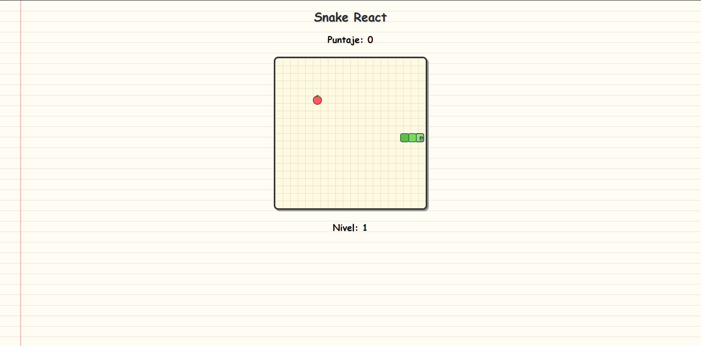

No. 004
Tipo Juego
Snake
Recreación del juego clásico de Snake.
Tecnologías
Qué demuestra
El proyecto demuestra el uso de React vía CDN junto con Babel vía CDN para realizar el juego de Snake por medio de componentes.
Reflexión
Este proyecto fue divertido al ver las amplias opciones que se pueden llegar a realizar utilizando useEffect y useState.